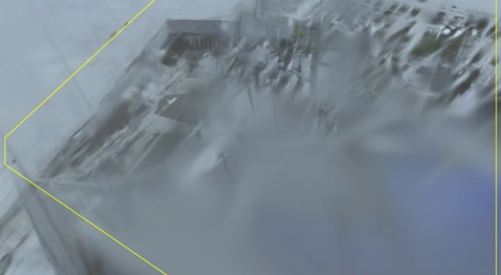
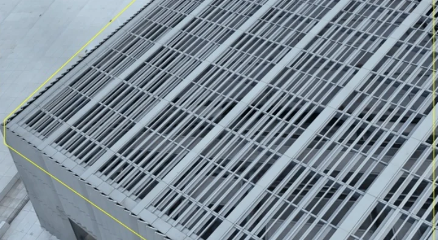
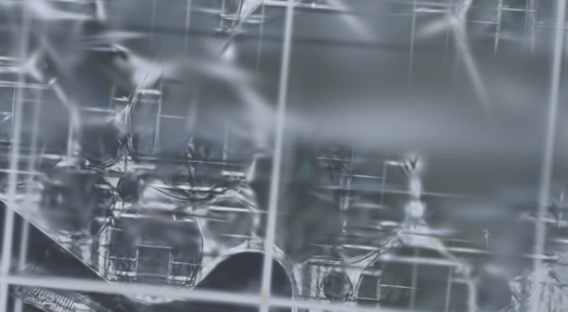
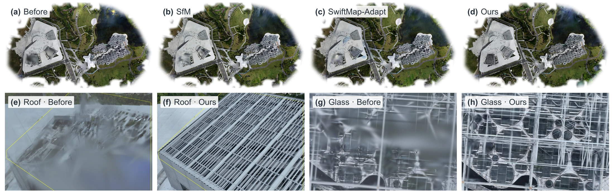

Consumer drones · Quality-guided capture · 3D Gaussian Splatting
OpenFlyScanA Quality-Guided Aerial Reconstruction System for Consumer Drones
TL;DR: OpenFlyScan predicts regional 3DGS reconstruction quality and guides targeted reacquisition with consumer drones to improve large-scale urban reconstructions.
Video
Real-world takeoff, automated capture, regional quality prediction, targeted reacquisition, and reconstruction for UAV simulation.
Overview
Constructing large-scale urban 3DGS assets remains constrained by equipment costs and delayed quality feedback. Preset surveys can leave complex surfaces insufficiently observed, with defects discovered only after reconstruction. OpenFlyScan is a quality-guided aerial reconstruction system for consumer drones that integrates a GS quality model, a reacquisition planner, and a custom-designed mobile app.
The model learns from GS rendering errors to predict regional quality before target-scene reconstruction. These predictions guide complementary reacquisition strips, executed through the app, which also supports automated oblique surveys and data transfer without additional onboard hardware. Initial-survey and additional images are jointly reconstructed.
Reconstructed Scenes
Field captures and reconstructions of real-world datasets. Simulation scenes are excluded.
Method
The mobile app manages capture and mission execution, while a remote workstation predicts regional reconstruction quality and plans targeted reacquisition.
GS quality model
The GS quality model consists of a frozen pretrained Pi3X backbone and a trainable cross-modal Quality Predictor. It combines multi-view image features, feed-forward geometry, and relative camera geometry to predict regional reconstruction quality.
Base supervision uses measured regional GS rendering errors; Sparse supervision uses weak targets constructed by removing supporting observations.
Read the method in the paper ↗Real-World Reacquisition Results
At Expo West, our method improves the reconstruction of roof grating and glass-panel boundaries. The sliders compare the initial reconstruction with joint reconstruction after targeted reacquisition.


BeforeOursRoof grating

BeforeOursGlass roof
View the full comparison with SfM and SwiftMap-Adapt

Original comparison from the paper. The reported PSNR gain is evaluated at registered additional views, not across the entire scene.
Resources
The full paper ↗
Method, experiments, and implementation details.
PDF available02 / Code & modelReconstruction system
Quality prediction, reacquisition planning, and simulation integration.
Available ↗03 / Android V5 appConsumer-drone capture
Automated oblique surveys, data transfer, and targeted reacquisition.
Available ↗04 / Simulator & sceneExpo East HIL runtime ↗
Linux runtime with the Expo East scene and HIL interface, ready to download.
Available ↗BibTeX
@misc{you2026openflyscanqualityguidedaerialreconstruction,
title = {OpenFlyScan: A Quality-Guided Aerial Reconstruction System for Consumer Drones},
author = {Zhongrui You and Zhen Li and Junli Liu and Zhigang Wang and Bin Zhao},
year = {2026},
eprint = {2609.24253},
archivePrefix = {arXiv},
primaryClass = {cs.RO},
url = {https://arxiv.org/abs/2609.24253}
}arXiv:2609.24253
Acknowledgments
We thank Shanghai Artificial Intelligence Laboratory for providing computing resources, UAV platforms, experimental facilities, and technical support for model training and real-world deployment.